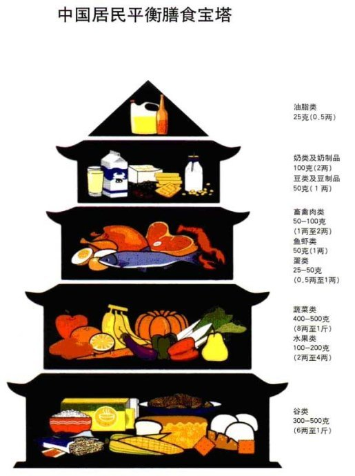

如何吃饭
营养的种类
营养的意义
营养素在人体内的功能主要分为3个方面：
- 供给能量和维持体温
- 作为“建筑”材料构成和修补身体组织
- 作为调节物质，维持机体的正常生命活动，如同机器中的润滑油一样
人体所需能量和营养素
能量
能量是维持人生命活动必不可少的部分，单位一般为千卡或千焦。1kcal=4.184kJ. 能量的消耗主要由以下4个方面
- 基础代谢消耗
- 食物特殊动力作用，摄取营养而引起的能量消耗。蛋白质最强，其次是碳水化合物，最后是脂肪
- 体力活动的消耗
- 生长发育消耗的能量
碳水化合物，脂肪,蛋白质作为人体主要的产能营养素，表现不相同。每克脂肪产能量约为9kcal，每克碳水化合物和蛋白质约4kcal。膳食指南推荐三者比例为6.5:2.5:1
主要营养素
| 名称 | 作用 | 主要来源 | 备注 |
|---|---|---|---|
| 蛋白质 | 构成和修补人体组织，构成酶和抗体，供给能量 | 肝，蛋，瘦肉，豆制品，奶制品；含量中等的是谷类食物 | 蛋白质的消化率不同，动物性食物可达90%，植物性只有80%。 |
| 脂类 | 供给能量，构成一些重要的生理物质，供给必需脂肪酸，维持体温保护脏器，脂溶性维生素来源 | 烹调油，肥肉，肉类，芝麻松子花生 | |
| 碳水化合物 | 主要能量来源，构成人体重要物质，增强肝脏解毒能力 | 谷物，薯类，豆类，坚果类，食糖。蔬菜水果有纤维素和果胶 | 淀粉是多糖，需分解为双糖（麦芽糖），再分解为可以直接吸收的单糖（葡萄糖） |
| 钙 | 骨骼和牙齿，以离子形式在血液中 | 奶制品，虾皮，海带，豆制品 | 吃膳食纤维会不利于吸收 |
| 铁 | 血红蛋白，肝脾 | 动物肝脏，血，鱼肉 | |
| 锌 | 促进生长发育，增进食欲，增强对于疾病的抵抗力 | 鲜牡蛎，肉蛋类 | |
| 碘 | 甲状腺素 | 海带紫菜海鱼 | 甲状腺肿大和甲亢 |
| 维生素A | 视网膜细胞，促进蛋白质合成，加强抵抗力 | 动物肝脏，奶油和蛋黄，红黄绿色蔬菜和水果 | |
| 维生素D | 促进钙磷在肠道中吸收 | 日光，皮肤会产生 | |
| 水 | 主要生理过程的介质，运输营养素，调节体温，润滑 | 水，食物水，代谢水 | 健康成人2500ml |
| 膳食纤维 | 促进肠蠕动，防止便秘 | 玉米，糙米，全麦粉，燕麦，干豆，蔬菜水果 |
中国居民膳食指南
- 食物多样，谷物为主
- 多吃蔬菜，水果和薯类（土豆，白薯，木薯等）
- 常吃奶类（100g），豆类或其制品（50g）
- 经常吃适量鱼、禽、蛋、瘦肉，少吃肥肉和荤油
- 食粮与体力活动要平衡，以保持适宜体重
- 吃清淡少盐的膳食
- 如饮酒，应限量
- 吃清洁卫生不变质的食物
膳食宝塔

食物加工和选择注意
- 淘米会损失维生素b1，洗的水温要低，次数要少
- 蒸面食营养损失少，面条营养损失较多
- 洗菜在流水中冲洗，不可在水中浸泡
- 红烧清炖肉类时，一些水溶性维生素和糖类，蛋白质融入水中，所以需要连汁带汤吃掉。炸食品严重破坏维生素
其他饮食技巧
聚餐减脂方法
- 聚会前2餐少吃
- 聚餐前几小时可增加一次训练
- 吃饭前15min喝两杯水
- 先吃蔬菜这类纤维含量高的
- 多给朋友加菜
- 遇油腻拿茶水涮，油的热量高
- 餐后大步走，后两餐少摄入
富有营养的食物
提升免疫力的
- 鸡汤
- 酸奶
- 鲑鱼，鲔鱼
- 大蒜
- 姜粉
- 含锌的食物
- 蔬菜和水果